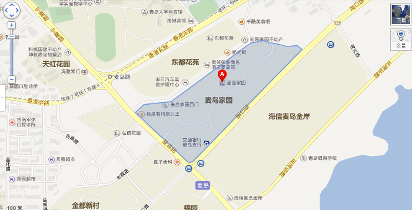

40000平方米商业网点的规划、招商、运营是现阶段公司的主体项目。广场毗邻青岛核心商务区和银海大世界、极地海洋世界等国家5A景区，中国海洋大学、青岛大学环绕四周。经济发达、交通便利，坐拥周边30万中高端消费群体，是岛城东部即将崛起的价值商圈。
40000平方米商业网点的规划、招商、运营是现阶段公司的主体项目。广场毗邻青岛核心商务区和银海大世界、极地海洋世界等国家5A景区，中国海洋大学、青岛大学环绕四周。经济发达、交通便利，坐拥周边30万中高端消费群体，是岛城东部即将崛起的价值商圈。
40000平方米商业网点的规划、招商、运营是现阶段公司的主体项目。广场毗邻青岛核心商务区和银海大世界、极地海洋世界等国家5A景区，中国海洋大学、青岛大学环绕四周。经济发达、交通便利，坐拥周边30万中高端消费群体，是岛城东部即将崛起的价值商圈。
 点击可查看百度地图 麦岛家园商业网点(麦岛广场)位于崂山区麦岛路与海口路交界处，占据麦岛路黄金地脚，紧邻M2地铁出口，配合周边10多条主干道、21条公交车线、12个公交站点。不仅能享受麦岛路超爆的人气，而且商圈辐射麦岛家园、麦岛金岸、锦园南区、弘信花园、天虹花园等周边高端社区，日均人流量达到10万人次。
同时也是品牌主力店旗舰聚集地，交通银行、利群集团、清谷料理、享咖咖啡、大船浜餐饮、皇家美孚、国风宏仁堂等强势入驻，未来商业潜力巨大。